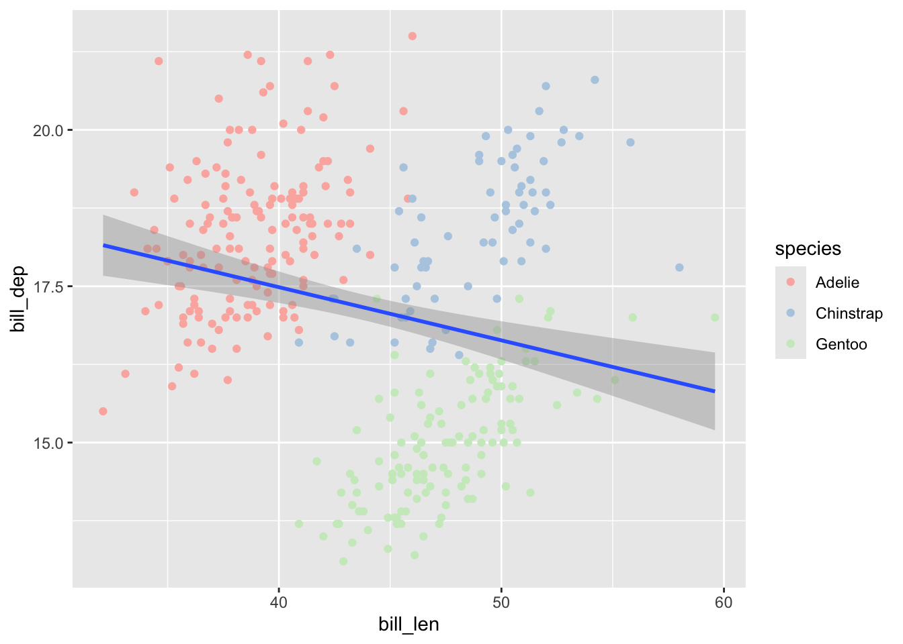
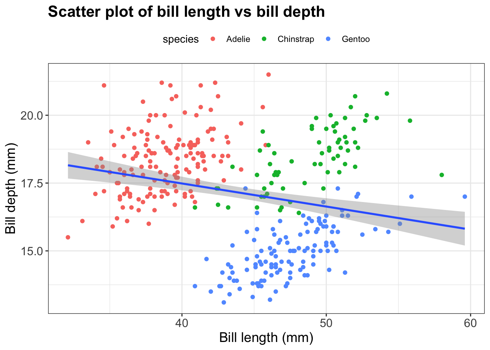
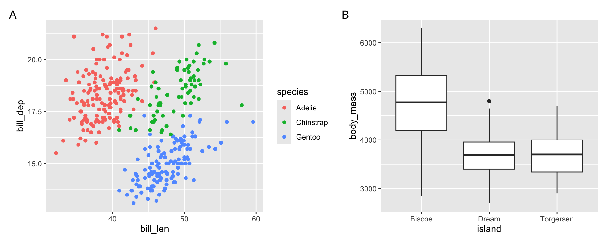

![]()
stepwise_vec <- seq(from = 6, to = 8, by = 0.2)
stepwise_vec [1] 6.0 6.2 6.4 6.6 6.8 7.0 7.2 7.4 7.6 7.8 8.0Optional self-study content for weeks 12-13
This page contains additional R material that builds on the week 13 lectures on vectors and data types, data wrangling, and visualization.
seq()The : operator makes series of whole numbers with steps of 1. For finer control, use the seq() function and its arguments from (start value), to (end value), and by (step size):
stepwise_vec <- seq(from = 6, to = 8, by = 0.2)
stepwise_vec [1] 6.0 6.2 6.4 6.6 6.8 7.0 7.2 7.4 7.6 7.8 8.0R has many functions that provide information about vectors and other types of objects, such as:
Get the number of elements with length():
length(stepwise_vec)[1] 11See the first and last few elements, respectively, with head() and tail():
# Print the first 6 elements:
head(stepwise_vec)[1] 6.0 6.2 6.4 6.6 6.8 7.0# Print the last 6 elements:
tail(stepwise_vec)[1] 7.0 7.2 7.4 7.6 7.8 8.0# Both head and tail have argument `n` to specify the number of elements:
tail(stepwise_vec, n = 2)[1] 7.8 8.0Get arithmetic summaries like mean() for vectors with numbers:
# mean() will compute the mean (average) across all elements
mean(stepwise_vec)[1] 7You can use functions inside the brackets and on the right side of the assignment arrow:
Change the last element to 0:
stepwise_vec[length(stepwise_vec)] <- 0
stepwise_vec [1] 6.0 6.2 6.4 6.6 6.8 7.0 7.2 7.4 7.6 7.8 0.0Change the second element to the mean value of the vector:
stepwise_vec[2] <- mean(stepwise_vec)
stepwise_vec [1] 6.000000 6.272727 6.400000 6.600000 6.800000 7.000000 7.200000 7.400000
[9] 7.600000 7.800000 0.000000Make a vector x with the whole numbers 1 through 26. Then, subtract 0.5 from each element in x and save the result in vector y. Check your results by printing both vectors.
x <- 1:26
x [1] 1 2 3 4 5 6 7 8 9 10 11 12 13 14 15 16 17 18 19 20 21 22 23 24 25
[26] 26y <- x - 0.5
y [1] 0.5 1.5 2.5 3.5 4.5 5.5 6.5 7.5 8.5 9.5 10.5 11.5 12.5 13.5 14.5
[16] 15.5 16.5 17.5 18.5 19.5 20.5 21.5 22.5 23.5 24.5 25.5In week 13, you saw how to use factors to store categorical data with a custom order. For most intents and purposes, it makes sense to think of factors as another data type, even though technically, they are a kind of data structure built on the integer data type:
diet_fct <- factor(c("high", "medium", "low"), levels = c("low", "medium", "high"))
typeof(diet_fct)[1] "integer"These sections build on the week 13 data visualization lecture, and use the same package and data set:
library(tidyverse)What if you have 10 treatments that you want to color? Picking all colors manually with scale_color_manual() requires a lot of typing. Instead, you can use ready-made color palettes, such as those from the RColorBrewer package, which is installed along with ggplot2:

For example, to use the Pastel1 palette for a scatter plot, use the function scale_color_brewer():
penguins |>
ggplot(aes(x = bill_len, y = bill_dep)) +
geom_point(aes(color = species)) +
scale_color_brewer(palette = "Pastel1") +
geom_smooth(method = "lm")`geom_smooth()` using formula = 'y ~ x'Warning: Removed 2 rows containing non-finite outside the scale range
(`stat_smooth()`).Warning: Removed 2 rows containing missing values or values outside the scale range
(`geom_point()`).
Besides applying a pre-defined theme like theme_bw(), you can change individual theme elements with the theme() function. For example, to change the text size of the plot title and axes, and the position of the legend:
penguins |>
ggplot(aes(x = bill_len, y = bill_dep)) +
geom_point(aes(color = species)) +
geom_smooth(method = "lm") +
labs(
title = "Scatter plot of bill length vs bill depth",
x = "Bill length (mm)",
y = "Bill depth (mm)"
) +
theme_bw() +
theme(
plot.title = element_text(size = 16, face = "bold"),
axis.title = element_text(size = 14),
axis.text = element_text(size = 12),
legend.position = "top"
)`geom_smooth()` using formula = 'y ~ x'Warning: Removed 2 rows containing non-finite outside the scale range
(`stat_smooth()`).Warning: Removed 2 rows containing missing values or values outside the scale range
(`geom_point()`).
Figures in papers often combine different plots as panels A, B, and so on. Faceting can’t do this, because all facets show the same type of plot and variables. Instead, you can use the patchwork package, which is not part of the tidyverse:
library(patchwork)First, save each plot as an object:
scatter_plot <- penguins |>
ggplot(aes(x = bill_len, y = bill_dep, color = species)) +
geom_point()
box_plot <- penguins |>
ggplot(aes(x = island, y = body_mass)) +
geom_boxplot()Then, combine them with | to put plots side by side (or / to put them on top of each other), and add panel labels with plot_annotation():
(scatter_plot | box_plot) +
plot_annotation(tag_levels = "A")Warning: Removed 2 rows containing missing values or values outside the scale range
(`geom_point()`).Warning: Removed 2 rows containing non-finite outside the scale range
(`stat_boxplot()`).
The result is a single plot object, which you can save to a file with ggsave() like any other plot.